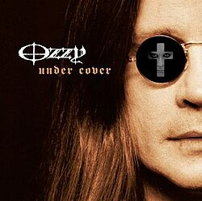

Década de 2000
-
Down to Earth (2001)
Incluye "Gets Me Through" y "Dreamer".

-
Under Cover (2005)
Álbum de versiones de canciones clásicas.
 -
Black Rain (2007)
Incluye "I Don't Wanna Stop" y "Not Going Away".